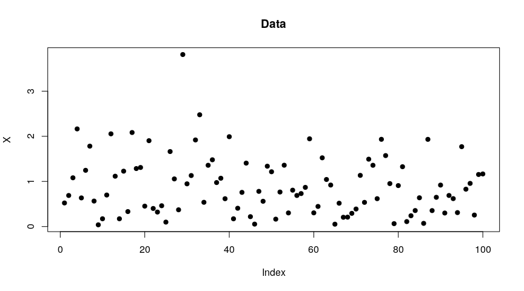
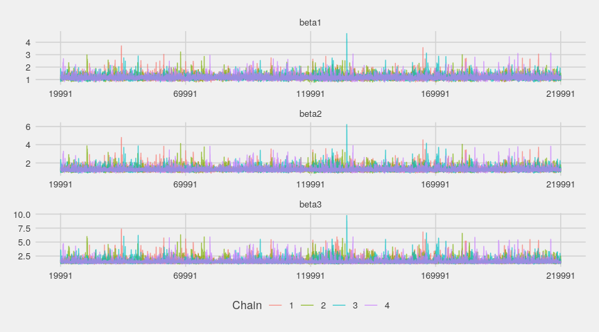
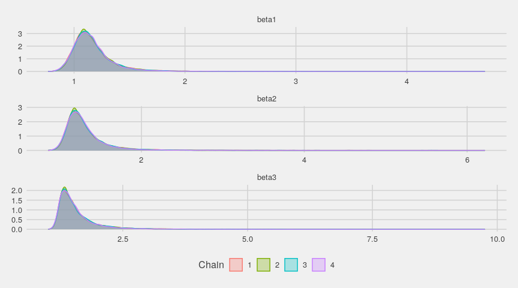
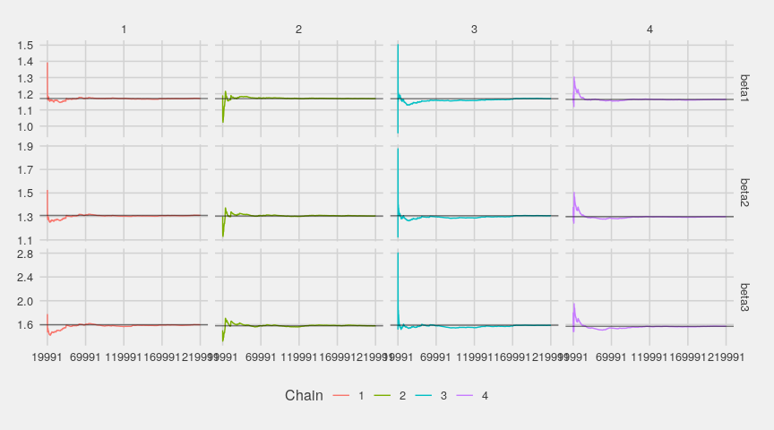
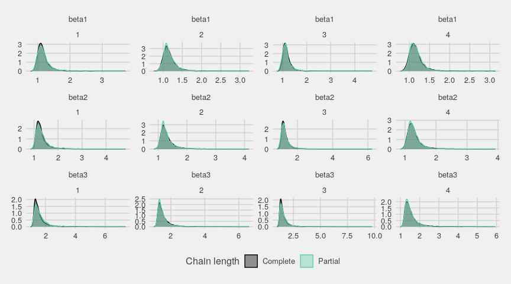
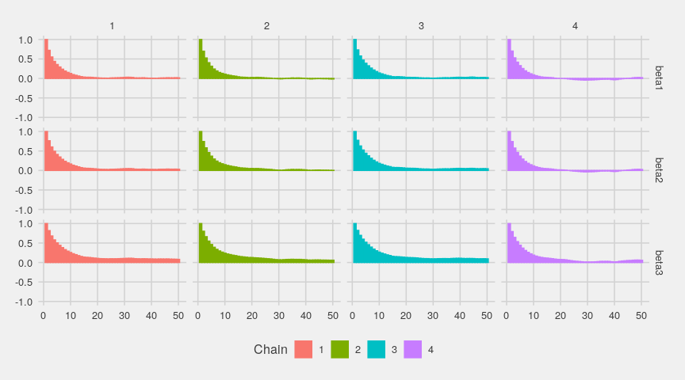

Generalized fiducial inference on quantiles
My new package ‘gfiExtremes’ is on CRAN now. So it is time to present it.
This package allows to get confidence intervals about the quantiles of any reasonable distribution (although the inference is based on a parametric model). The statistical inference is fiducial.
To give an illustration, I’m taking a sample of length 100 randomly generated from a Weibull distribution:
set.seed(1111111111L)
X <- rweibull(100L, shape = 1.5)
plot(X, pch = 19, main = "Data")
The model used for the fiducial inference assumes a generalized Pareto distribution above a certain threshold. For an unknown value of this threshold, the function to use is gfigpd2. It runs a MCMC sampler, and one has to specify the length of the burnin phase, the desired length of the MCMC chains after the burnin, and the thin value (e.g. a thin of 2 means that one sampled value over two is dropped). One also has to specify the desired probability levels of the quantiles we are interested in.
library(gfiExtremes)
chains <- gfigpd2(
X, # data
beta = c(99, 99.5, 99.9)/100, # probability levels
threshold.init = 0.7, # initial threshold value
burnin = 20000L, iter = 20000L, thin = 10L # MCMC chains
)By default, gfigpd2 runs four MCMC chains and they are generated in parallel.
The output of gfigpd2 is a R object ready for analysis with the ‘coda’ package, which is loaded by ‘gfiExtremes’. In particular, it has a summary method:
summary(chains)
##
## Iterations = 20001:219991
## Thinning interval = 10
## Number of chains = 4
## Sample size per chain = 20000
##
## 1. Empirical mean and standard deviation for each variable,
## plus standard error of the mean:
##
## Mean SD Naive SE Time-series SE
## beta1 3.297 1.172 0.004145 0.01229
## beta2 3.892 3.539 0.012513 0.03705
## beta3 6.789 80.903 0.286035 0.72901
##
## 2. Quantiles for each variable:
##
## 2.5% 25% 50% 75% 97.5%
## beta1 2.512 2.858 3.096 3.444 5.240
## beta2 2.765 3.157 3.459 3.963 7.307
## beta3 3.250 3.740 4.268 5.362 17.127The ‘coda’ package provides the HPDinterval function which gives the shortest confidence intervals:
HPDinterval(joinMCMCchains(chains))
## lower upper
## beta1 2.371387 4.591365
## beta2 2.524189 5.910930
## beta3 2.893593 11.091305
## attr(,"Probability")
## [1] 0.95Below are the true values of the Weibull quantiles; they are caught by the confidence intervals:
qweibull(c(99, 99.5, 99.9)/100, shape = 1.5)
## [1] 2.767985 3.039196 3.627087Convergence diagnostics
Now one has to check that the MCMC chains have entered in their stationary phase. It is better to take the logarithm of the simulations of the fiducial distributions of the quantiles:
logChains <- as.mcmc.list(lapply(chains, log))The ‘ggmcmc’ package is helpful here. Firstly, let’s have a look at the traces:
library(ggmcmc)
gglogChains <- ggs(logChains)
library(ggthemes)
ggs_traceplot(gglogChains) + theme_fivethirtyeight()
Visually, nothing indicates a departure from the convergence. Let’s look at the estimated densities now:
ggs_density(gglogChains) + theme_fivethirtyeight()
The running means quickly stabilize:
ggs_running(gglogChains) + theme_fivethirtyeight()
Below are the densities of the whole chains compared with the densities of their last part:
ggs_compare_partial(gglogChains) + theme_fivethirtyeight()
The autocorrelations nicely decrease:
ggs_autocorrelation(gglogChains) + theme_fivethirtyeight()
Let’s also have a look at the Gelman-Rubin diagnostic:
gelman.diag(logChains)
## Potential scale reduction factors:
##
## Point est. Upper C.I.
## beta1 1 1.00
## beta2 1 1.01
## beta3 1 1.01
##
## Multivariate psrf
##
## 1The upper Rhat are close to 1, thereby indicating a successful diagnostic.
Finally, let’s look at the Heidelberger & Welch diagnostic:
heidel.diag(logChains)
## [[1]]
##
## Stationarity start p-value
## test iteration
## beta1 passed 1 0.591
## beta2 passed 1 0.356
## beta3 passed 1 0.189
##
## Halfwidth Mean Halfwidth
## test
## beta1 passed 1.17 0.00818
## beta2 passed 1.31 0.01201
## beta3 passed 1.60 0.03032
##
## [[2]]
##
## Stationarity start p-value
## test iteration
## beta1 passed 1 0.652
## beta2 passed 1 0.571
## beta3 passed 1 0.400
##
## Halfwidth Mean Halfwidth
## test
## beta1 passed 1.17 0.00713
## beta2 passed 1.30 0.01047
## beta3 passed 1.58 0.02423
##
## [[3]]
##
## Stationarity start p-value
## test iteration
## beta1 passed 1 0.0720
## beta2 passed 1 0.0687
## beta3 passed 1 0.0789
##
## Halfwidth Mean Halfwidth
## test
## beta1 passed 1.17 0.00856
## beta2 passed 1.31 0.01278
## beta3 passed 1.59 0.03042
##
## [[4]]
##
## Stationarity start p-value
## test iteration
## beta1 passed 1 0.444
## beta2 passed 1 0.276
## beta3 passed 1 0.164
##
## Halfwidth Mean Halfwidth
## test
## beta1 passed 1.16 0.00709
## beta2 passed 1.30 0.01008
## beta3 passed 1.57 0.01926All tests passed.